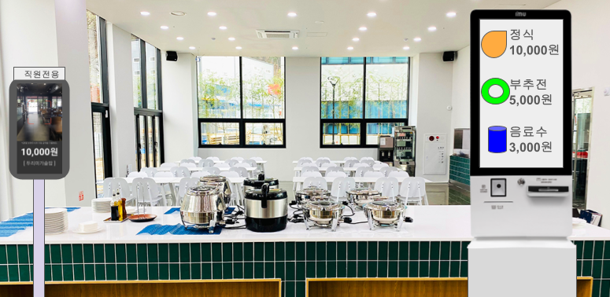
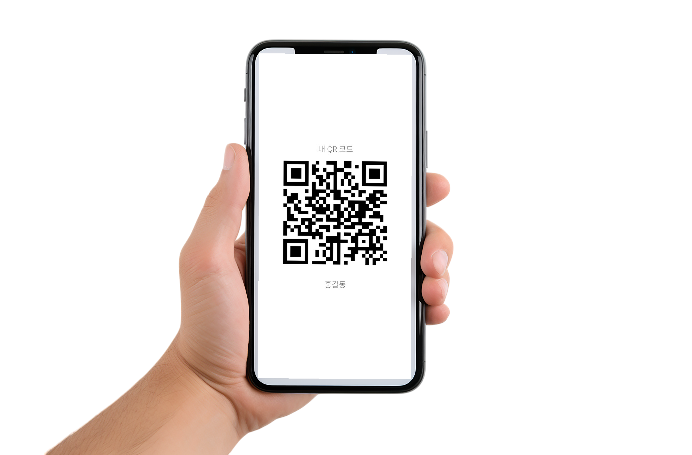
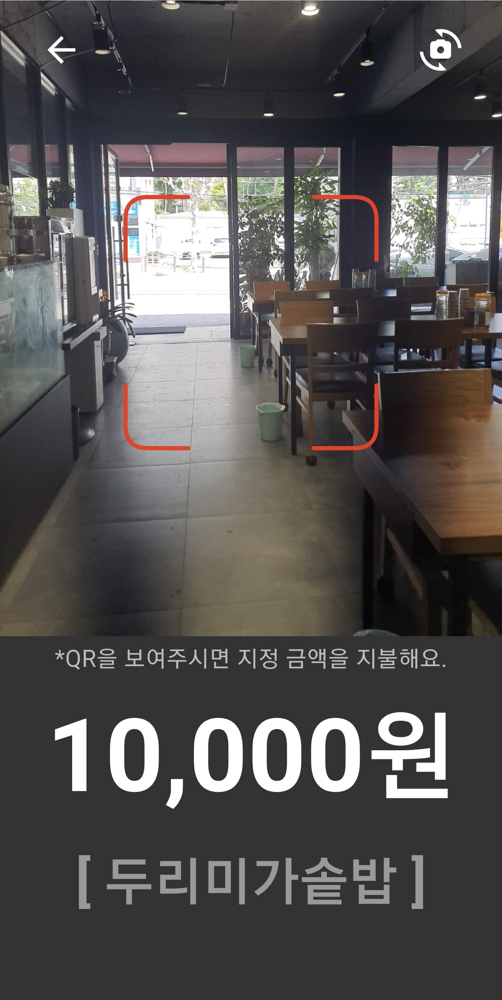
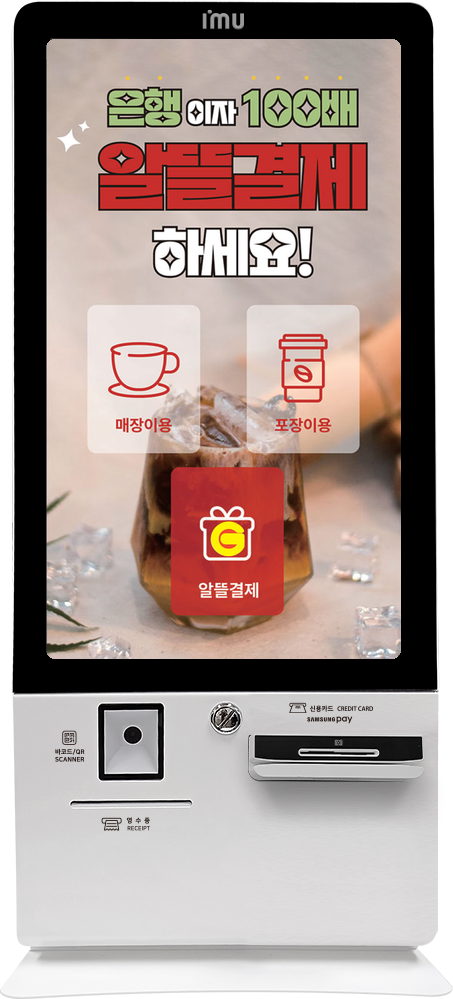
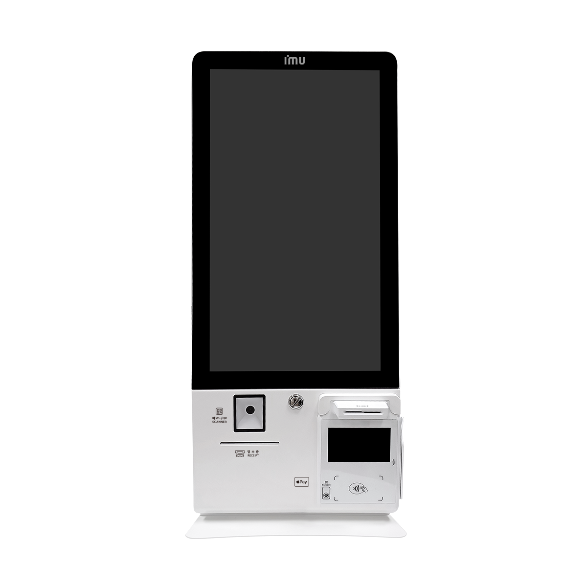
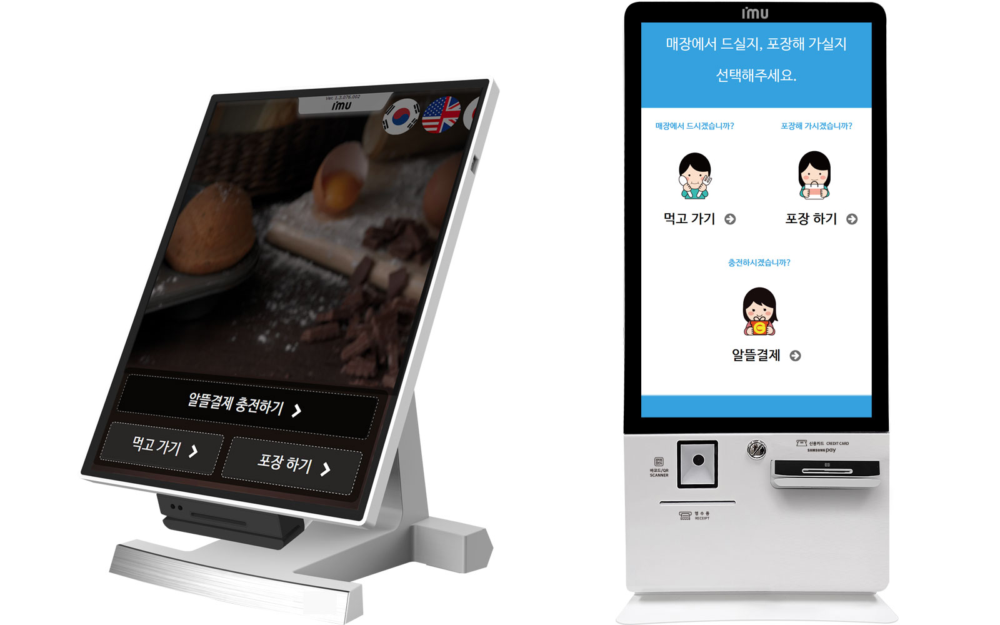
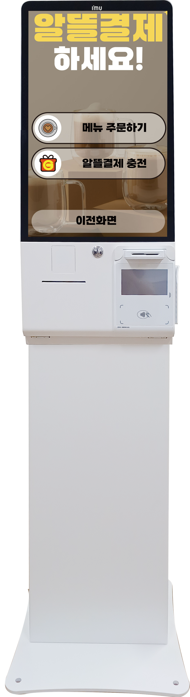

장부 관리와 플라스틱(RFID)·바코드 카드의 시대는 끝.
배포부터 정산까지 100% 모바일로 완벽하게 자동화합니다.
내부 직원은 스마트폰 (및 태블릿) QR 스캐너로, 내·외부 고객은 키오스크로 — 한 곳에서 모두 수용합니다

스마트폰(태블릿) QR스캐너에 개인 QR을 스캔해 1초 만에 입장·결제합니다.
키오스크에서 정식·부추전·음료수를 주문하고 신용카드 또는 직원 QR로 결제합니다.
플라스틱·바코드 카드와 수기 장부 — 구입부터 운영까지 이어지는 세 가지 손실 지점
새 기기도, 설치 교육도 필요 없습니다 — 코로나19 출입인증으로 누구나 익숙한 방식
기존 스마트폰(또는 태블릿)을 QR 스캐너로 사용 — 플라스틱카드·리더기·PC 구매 불필요.
(회사 관리자의 정책 설정 및 식당 관리자의 수용으로 준비 완료)
전 직원에게 개인별 QR을 MMS(그림 문자)로 전송 → 회사 정책 자동 적용.
(이용자 앱을 받으면 내역 확인과 부가 기능도 활용할 수 있습니다)
전송받은 QR코드를 화면에 띄우고 스캔하면 1초내 결제 완료 — 부여받은 한도내 사용.
(관리자 확인 후 신규 직원도 즉시 이용)


방문 고객의 카드 결제와 직원의 QR 결제를 한 기기에서 함께 받습니다

📷 QR 스캐너직원 QR 결제 💳 카드 단말방문객 카드 결제처음 온 외부 고객은 키오스크에 신용·체크카드로 즉시 결제.
카드 단말기를 따로 둘 필요가 없습니다.
직원은 같은 키오스크의 QR 스캐너에 앱 QR을 스캔.
카드 결제와 QR 결제가 한 기기에서 연동되어 동시에 운영됩니다.
고정 직원 + 방문 고객. 키오스크 1대로 QR·카드를 함께 받습니다.
식수 인원이 많은 현장. 키오스크 + QR리더를 함께 세워 편한 쪽에서 결제합니다.
pos.kr 키오스크 이용 매장 사례 — 카드 결제와 QR 결제를 연동해 별도 카드 단말 준비 없이 운영합니다.
싸고, 믿을 수 있고, 편합니다
3~4백만원짜리 카드·리더기·PC 구축비가 0원. 안 쓰는 스마트폰으로 시작합니다.
모든 거래를 3 방향으로 검증 — 외부인 부정 사용은 물론 축소·누락 등 악의적 장부 기록 조작까지 차단.
끼니·메뉴·구역별 가격·정책까지 세분 설정 — 배포·집계·정산은 전부 자동, 월말 1분.
한눈에 비교해 보세요
| 비교 항목 | 모바일 QR 식수관리시스템 | 플라스틱(RFID)·바코드 방식 |
|---|---|---|
| 💰 초기 도입 비용 | 250만원 28~90만원할인 MMS 270원/건, 안 쓰는 스마트폰 활용 | 370~420만원 RFID카드 90만 + 리더기 3대 180만 + PC 100만 |
| 🧾 배포·분실 등 운영비 | 저렴문자 알림으로 즉시 재발급 | 높음카드 재교부·분실 관리 부담 |
| 🛡️ 식대 손실(누수율) 방지 | 매우 강력3 방향 검증 — 축소·누락 0% | 매우 취약기록·취합 오류, 카드 분실·대리사용 |
| 🧩 식당 선결제 지원 여부 | 100% 자동화 내재선불·후불 자동화로 식당 매출 증대 지원 | 불가능별도 쿠폰·장부 추가 준비 불가피 |
회사관리자 · 매장관리자 · 이용자가 각자의 앱에서 실시간으로 확인합니다
예산과 인원, 행위를 완벽하게 통제합니다
일·주·월 단위로 횟수·포인트를 자동 충전. 미사용 잔여분은 소멸합니다.
회식·근무 외 식사 등 1회성 정책을 즉시 부여. 부서별 또는 회사 비용으로 정확히 귀속됩니다.
식당의 신규자 등록을 ON/OFF로 전환. 100% 본사 등록과 현장 등록 허용 사이를 자유롭게 선택합니다.
2시간내 재사용 시 사유 입력을 팝업. 비정상 결제를 사전에 차단하고 기록으로 남깁니다.
CCTV로 검증하고, 키오스크로 내·외부 고객까지 수용합니다
초 단위 DB 기록으로 CCTV 영상과 결제를 정확히 매칭합니다. 부정·대리 결제 분쟁이 발생해도 완벽한 객관적 근거를 제공합니다.



일반 매장도 키오스크를 통해 내·외부 고객을 동시에 수용하고, 함께 운영하는 카페까지 하나의 결제 생태계로 접목합니다.
20년 경력의 IT·결제 전문가가 만듭니다
20년 이상의 IT 시스템 개발 경험을 보유한 전문가들이 직접 설계·운영합니다.
수많은 카페·매장에서 검증된 결제/정산 엔진을 기업 식수 관리에 그대로 적용합니다.
국내 유수의 키오스크 기업과 대형 프랜차이즈가 인정한 기술력입니다.